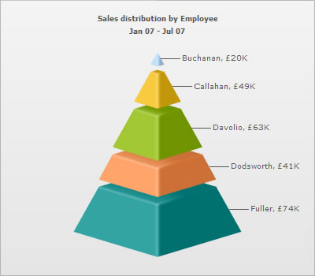

| Using Currency Symbols |
Currency symbols, e.g., £(Pound), €(Euro), ¥(Yen) etc., may also be a part of the data which is displayed on charts. This section guides you on how to include the most used currency symbols as a part of your charts. |
| Using Pound(£) sign |
|
To display the Pound character on a chart, you can simply include it in the XML/JSON data source of the chart. This is applicable in both Data URL and Data String methods. Following data includes the £ character: |
<chart showValues="1" caption="Sales distribution by Employee" subCaption="Jan 07 - Jul 07" numberPrefix="£" isSliced="1">
<set value="20000" label="Buchanan"/>
<set value="49000" label="Callahan"/>
<set value="63000" label="Davolio"/>
<set value="41000" label="Dodsworth" />
<set value="74000" label="Fuller"/>
</chart>
{
|
|
The above data produces a chart with the £ symbol prefixed to all numeric values:  When using the HTML embedding method and Data string method, it is essential to encode pound character as %A3. |
| Using Yen(¥) sign |
|
To display the Yen character on a chart, you can simply include it in the XML/JSON data source of the chart. This is applicable in both Data URL and Data String methods. Following data includes the ¥ character: |
<chart caption='Sales distribution by Employee' subCaption='Jan 07 - Jul 07' numberPrefix='¥' isSliced='1'> <set label='Buchanan' value='20000' /> <set label='Callahan' value='49000' /> <set label='Davolio' value='63000' /> <set label='Dodsworth' value='41000' /> <set label='Fuller' value='74000' /> </chart> {
|
|
The above data produces a chart with ¥ prefixed to all numeric values: When using the HTML embedding method and Data string method, it is essential to encode yen character as %A5. |
| Using Cent(¢) sign |
|
To display the Cent character on a chart, you can simply include it in the XML/JSON data source of the chart. This is applicable in both Data URL and Data String methods. Following data includes the ¢ character: |
<chart caption='Sales distribution by Employee' subCaption='Jan 07 - Jul 07' numberPrefix='¢' isSliced='1'> <set label='Buchanan' value='20000' /> <set label='Callahan' value='49000' /> <set label='Davolio' value='63000' /> <set label='Dodsworth' value='41000' /> <set label='Fuller' value='74000' /> </chart> {
|
|
The above data produces a chart with ¢ prefixed to all numeric values: When using the HTML embedding method and Data string method, it is essential to encode cent character as %A2. |
| Using Euro(€) sign |
|
To display the Euro character on a chart, you can simply include it in the XML/JSON data source of the chart. This is applicable in both Data URL and Data String methods. Following data includes the € character: |
<chart caption='Sales distribution by Employee' subCaption='Jan 07 - Jul 07' numberPrefix='€' isSliced='1'> <set label='Buchanan' value='20000' /> <set label='Callahan' value='49000' /> <set label='Davolio' value='63000' /> <set label='Dodsworth' value='41000' /> <set label='Fuller' value='74000' /> </chart> {
|
|
The above data produces a chart with the € symbol prefixed to all numeric values: Euro character falls into the category of extended Unicode character-set. To display a euro character in your chart, the XML file should be encoded with UTF-8 BOM signature, otherwise the character will not be displayed properly. To know more about BOM and how to add it in your XML, please read What is BOM. |
| Using Franc(₣) sign |
|
To display the Franc character on a chart, you can simply include it in the XML/JSON data source of the chart. This is applicable in both Data URL and Data String methods. Following data includes the ₣ character: |
<chart caption='Sales distribution by Employee' subCaption='Jan 07 - Jul 07' numberPrefix='₣' isSliced='1'> <set label='Buchanan' value='20000' /> <set label='Callahan' value='49000' /> <set label='Davolio' value='63000' /> <set label='Dodsworth' value='41000' /> <set label='Fuller' value='74000' /> </chart> {
|
|
The above data produces a chart with ₣ prefixed to all numeric values: Franc character falls into the category of extended Unicode character-set. To display a franc character in your chart, the XML file should be encoded with UTF-8 BOM signature, otherwise the character will not be displayed properly. To know more about BOM and how to add it in your XML, please refer to What is BOM. |